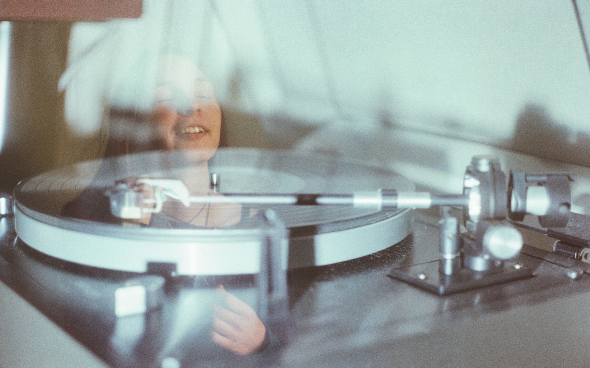
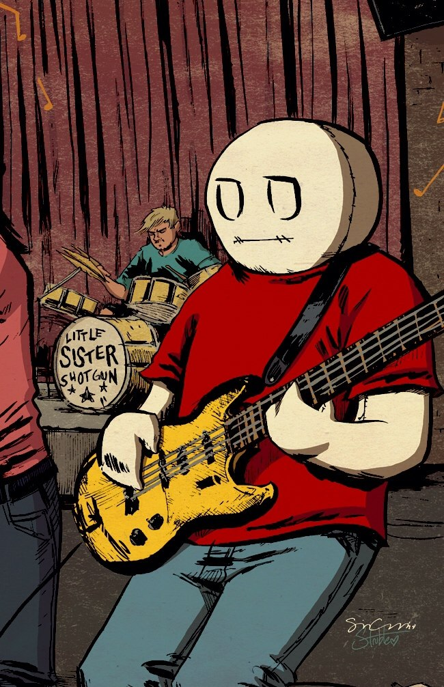

Сырых Максим, СКБ Контур
Максим Сырых для #uraljs №3
<audio src="src.wav">Ваш браузер не поддерживает элемент audio</audio>
| Chrome | Firefox | Safari | IE 9+ | |
|---|---|---|---|---|
| WebM + VP8/VP9 + Vorbis/Opus | + | + | + | – |
| Ogg + Theora + Vorbis/Opus | + | + | – | – |
| MP4 + H.264 + AAC/MP3 | + | + | + | + |
| MP3 | + | + | + | + |
| WAVE + PCM | + | + | + | – |
| FLAC | – | 51+ | – | – |
<audio><source src="example.webm" type="audio/webm"><source src="example.mp4" type="audio/mp4"></audio>
let audio = document.createElement('audio')audio.src = 'sounds/tag-audio-demo.mp3'let btnMute = document.getElementById('tag-audio-demo--mute')let playMute = document.getElementById('tag-audio-demo--play')let pauseMute = document.getElementById('tag-audio-demo--pause')
btnMute.onClick = e => {audio.muted = !audio.muted}playMute.onClick = () => { audio.play() }pauseMute.onClick = () => { audio.pause() }
const myAudio = document.querySelector('audio')const context = new AudioContext()const source = context.createMediaElementSource(myAudio)const gainNode = context.createGain()const delayNode = context.createDelay(5.0)
...source.connect(delayNode)delayNode.connect(gainNode)gainNode.connect(context.destination)
const context = new AudioContext()navigator.getUserMedia({ audio: true, video: false },stream => {const source = context.createMediaStreamSource(stream)})
const context = new AudioContext()const gainNode = context.createGain()gainNode.gain.value = 0 // mutedgainNode.gain.value = 1 // 100% volumegainNode.gain.value = 3 // 300% volume
const context = new AudioContext()const delayNode = context.createDelay(1.0)
const context = new AudioContext()const biquadFilter = context.createBiquadFilter()biquadFilter.type = "bandpass"biquadFilter.frequency.value = 1000biquadFilter.Q.value = 100biquadFilter.gain.value = 25
Максим Сырых
syryh_m@kontur.ru
